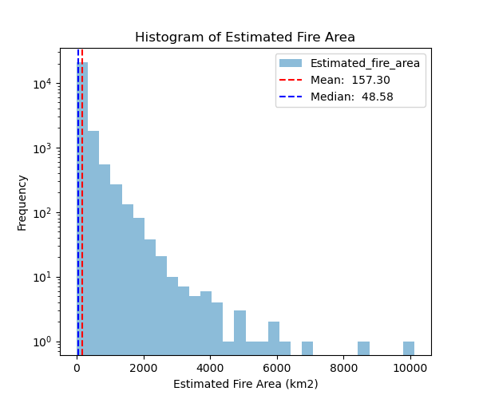
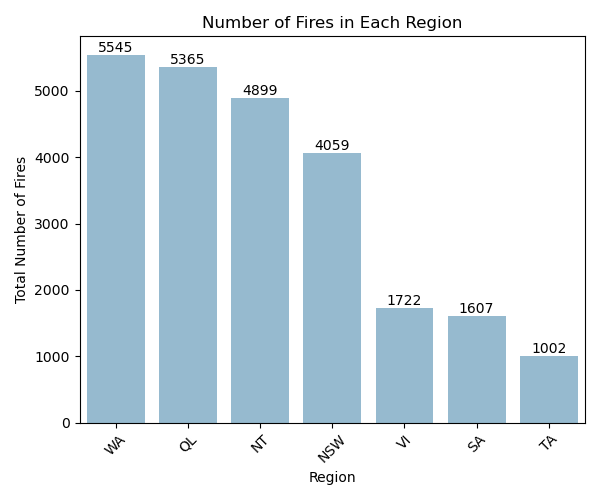
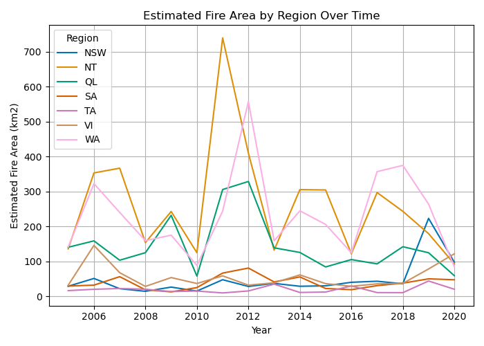
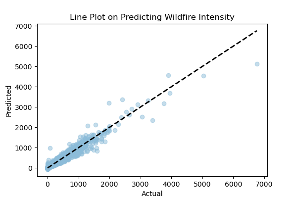
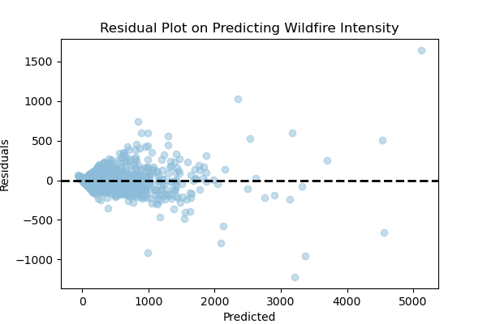

| Feature | Coefficient | |
|---|---|---|
| 0 | Count | 2.01184 |
| 1 | Mean_confidence | -1.51218 |
| 2 | Mean_estimated_fire_brightness | -1.57312 |
| 3 | Mean_estimated_fire_radiative_power | 0.487834 |
Predicting Wildfire Intensity From Historical Data
Group 15
Summary
This study employing a linear regression model to predict wildfire intensity in Australian regions aims to draw parallels with British Columbia’s escalating wildfire risk due to climate-related weather. Using a dataset encompassing fire-related variables since 2005, including fire area, brightness, and radiative power, the analysis reveals a strong positive correlation between fire area and mean radiative power. The model demonstrates good fit and offers potential applications in wildfire management and prediction.
Introduction
British Columbia is well-known for having a moderate climate associated with its beautiful, temperate rainforests; but in recent years, climate-related weather extremes in the region have caused a significant increase in forest fires (DellaSala 2011; Parisien 2023). The rapid onset of the problem, in conjunction with its unprecedented magnitude, has left British Columbians vulnerable as provincial authorities struggle to develop infrastructure capable of addressing the frequency and severity of the fires (Parisien 2023). While inland residents face a heightened risk of losing their lives, homes, and loved ones to wildfires, the resulting smoke influences air quality throughout the province, posing profound health risks (Cascio 2018).
While rates of climate-related fire events are projected to increase globally, due to the composition of its ecological landscape, Australia is a nation that is well accustomed to battling wildfires (Jones 2022; Bowman 2018). There is notable overlap between the terrestrial biomes present in both Australia and B.C., particularly in the unique temperate coastal regions steeped with flammable vegetation, and the semi-arid inland deserts (Dickman 2018; Bowman 2018). Given its proximity to the equator, Australia’s North coast exhibits fewer similarities to B.C (Dickman 2018; DellaSala 2011). However, a shift in the B.C. climate precipitated by rising temperatures is occurring; some of the drier inland areas are beginning to mimic the ecological conditions found on Australia’s North coast.
Here, we attempt to predict the intensity of wildfires in regions across Australia that exhibit ecological similarities to B.C. in the hopes that the model can be adapted for provincial use. The four highest temperatures over the last century in B.C. have all been recorded within the last seven years; the swiftness with which the local climate is changing has caused a scarcity of regional data to anticipate the state of future wildfire seasons (Parisien 2023). We will be using a dataset processed by IBM containing information collected via thermal imaging technology since 2005, which captures a number of variables such as region, daily sum of estimated fire area, brightness, and radiative power (Hamann 2021; Krook 2021). For the purposes of this analysis, fire intensity will be represented by estimated daily regional area affected by fire. The rarity of the terrestrial biomes shared by both regions, coupled with Australia’s experience in wildfire management, present B.C. with an unlikely learning opportunity: it is possible that the wealth of historical data on Australian wildfires could be used to help B.C. predict forest fire intensity (Bowman 2018; DellaSala 2011). A sentiment that has been shared among Canadian researchers is that the abilities of machine learning tools are not taken advantage of by the Canadian Wildland Fire Information System (Purcell 2023). Current wildfire research efforts should be supplemented by modern technological methods; hopefully, they can be used to preempt the trajectory of wildfire prevalence, and make life-saving modifications to infrastructure.
Methods
Data
Our dataset contains information about wildfires throughout seven geographic regions in Australia, starting from the year 2005. It can be located in its entirety on GitHub, and this is the specific csv containing the data used for our analysis (Hamann 2021; Krook 2021).
There are 26,404 rows and 9 columns. Definitions for each variable, obtained from the original data documentation, are provided below.
Region: The respective regions as outlined above for which the data was/is aggregated.DateDay of acquisition of the data. All dates are in UTC and provide the data for 24 hours ahead.Estimated_fire_area: Daily sum of estimated fire area for presumed vegetation fires with a confidence level of larger than 75% for a given region. To obtain this estimated area the scan pixel size was multiplied by the along track pixel size. The nominal unit for the area is in kmA2.Mean_estimated_fire_brightness: Daily mean (by flagged fire pixels(=count)) of estimated fire brightness for presumed vegetation fires with a confidence level of larger than 75% for a given region. The data was obtained by averaging the means of both the brightness temperature 21 (obtained from channel 21/22) and brightness temperature 31 (obtained from channel 31). The units are in Kelvin.Mean_estimated_fire_radiative_power: Daily mean (by flagged fire pixels(=count)) of estimated radiative power for presumed vegetation fires with a confidence level of larger than 75% for a given region. The units are in megawatts.Mean_confidence: Daily mean of confidence for presumed vegetation fires with a confidence level of larger than 75% for a given region. This value is based on a collection of intermediate algorithm quantities used in the detection process. It is intended to help users gauge the quality of individual hotspot/fire pixels. Confidence estimates range between 0 and 100%.Std_confidence: Standard deviation of estimated fire radiative power if available. The units are in megawatts.Var_confidence: Variance of estimated fire radiative power if available. The units are in megawatts.Count: Daily numbers of pixels for presumed vegetation fires with a confidence level of larger than 75% for a given region.Replaced: Indicates with an “R” whether the data has been replaced with higher quality data when available (usually with a 2-3 month lag). Replaced data has slightly higher quality but it is expected to be of very minor impact in this contest. Please note that most corrections in the replaced data are associated with the precise geolocation and the fire classification. Most notably there is no classification for the type of fire, which means that all fires are assumed to be vegetation fires. Comparing the data from 2005 to 2020 more than 98% of the fires were eventually classified to be presumed vegetation fires.
The data was spatially averaged to the following seven regions in Australia:
- New South Wales (NSW)
- Northern Territory (NT)
- Queensland (QL)
- South Australia (SA)
- Tasmania (TA)
- Victoria (Vl)
- Western Australia (WA)


Figure 1 shows the distribution of fires by the magnitude of the area affected, in kilometres squared. The mean fire size is 157.30km2, while the median is 48.58km2. Predictably, the frequency of fires decreased as their size increased. A few outlying cases with very high fire area can be observed. The distribution of fires across regions is shown in Figure 2, which indicates that Western Australia experiences the most fires, while Tasmania has the least. Two general groups can be observed: regions with increased fire prevalence (Western Australia, Queensland, Northern Territory, & New South Wales), and regions with significantly lower fire prevalence (Victoria, South Australia, & Tasmania).

A scatterplot illustrating the area consumed by a single fire compared to fire brightness is shown in Figure 3. Points appear to be fairly normally distributed about the mean of Mean_Brightness, although the outlying points result in high kurtosis. This visualization shows that the majority of outlier points noted in Figure 1 occurred in Western Australia. Figure 4 is a lineplot displaying the area consumed by fires each year in km2 by region. Despite our previous observation from Figure 2 that a notable number of fires have occurred in New South Wales, Figure 4 indicates that the magnitude of the fires occurring in this region is not comparatively significant; i.e., there may be lots of fires, but they generally seem to be small fires that consume less area. This indicates that fire frequency alone is an insufficient predictor of fire severity.
Analysis
A linear regression model was trained to predict the intensity of forest fires in Australia, measured by estimated total fire area (the column Fire_area), using the variables Count, Mean_conf, Mean_brightness, and Mean_rad_pwr. We opted to use a linear regression model due to its interpretability and the continuous nature of our target variable. Prior to fitting the model, the numeric variables were isolated and standardized so that the coefficients we obtained would not be influenced by scale differences in the variables. Only four of the eight potential predictor variables were used to train the model: non-numeric variables were eliminated, and then a correlation analysis (see Figure 5) was performed to identify which features present in the remaining data would be good predictors of the target variable.
The data was divided into training and test sets using an 80/20 split. The model was first trained on the training data, and then used to make predictions on the test set. This analysis was performed using the Python Programming Language (Van Rossum and Drake 2009) and the following Python packages: requests (Reitz 2011), zipfile (Ziplfile – Work with ZIP Archives 2022), numpy (Harris 2020), Pandas (McKinney 2010), matplotlib (Hunter 2007), scikit-learn (Pedregosa 2011), and seaborn (Waskom 2021).
Results & Discussion
Table 1 presents the coefficients obtained from our model. A strong positive association is indicated between Count and Fire_area, while a moderate positive association is implied between Mean_rad_pwr and Fire_area. This suggests larger predicted fire areas correspond to both an increase in the number of fires and higher radiative power. Conversely, negative associations are evident between Fire_area and Mean_conf (mean confidence) and Mean_brightness, indicating that increased confidence in fire detection and greater brightness of detected fires are associated with smaller predicted fire areas. This implies that fires with traits that make them more detectable tend to affect smaller geographic areas.
| Metric | Value | |
|---|---|---|
| 0 | RMSE | 72.9543 |
| 1 | R-squared score | 0.947599 |
We chose to evaluate our model using Root Mean Squared Error (RMSE), which measures the difference between the actual observed values and the values predicted by a model, and R-squared, which indicates the proportion of variance in the target variable that is explained by a model’s predictors. The evaluation metrics generated for our model can be seen in Table 2. Good model fit was indicated by the scores obtained for the seleced model metrics: an RMSE of 72.95 and R-squared of 0.9476, respectively.


A strong positive linear relationship between the target variable and the predictors Count and Mean_rad_pwr can be observed in Figure 6 and Figure 7, the line and residual plots accompanying the analysis. The predictors Mean_brightness and Mean_conf have negative coefficients, indicating a decrease in the value of these features precipitates an increase in the value of the target variable Fire_area.
The findings are consistent with our expectations, as regions with greater radiative power correlate with larger wildfire areas. However, the negative coefficient for Mean_brightness and Mean_conf suggests an inverse relationship, implying that lower brightness and confidence intervals are associated with larger fire areas.
The prediction model may have significant implications for wildfire management and prediction, aiding in the early detection and estimation of wildfire occurrences. This method can assist wildlife management services and authorities in better understanding the nature of wildfires. Integration of this approach can also help reduce risks posed by wildfires to ecosystems, communities, and public health.
For future iterations, it’s worth considering further exploration of the correlation between mean estimated fire brightness and confidence, as this unexpected relationship may offer insights into underlying factors. Additionally, exploring other variables such as area, land characteristics, dryness, or the presence of old growth could provide valuable insights into their influence on wildfire occurrence.
References
Bowman, Daniels, D. M. J. S. 2018. “Can Air Quality Management Drive Sustainable Fuels Management at the Temperate Wildland–Urban Interface?” Fire 1 (2): 27. https://doi.org/https://doi.org/10.3390/fire1020027.
Cascio, W. E. 2018. “Wildland Fire Smoke and Human Health. Science of the Total Environment.” Fire 624: 586–95. https://doi.org/https://doi.org/10.1016/j.scitotenv.2017.12.086.
DellaSala, Alaback, D. A. 2011. Just What Are Temperate and Boreal Rainforests? Island Press/Center for Resource Economics eBooks. https://doi.org/https://doi.org/10.5822/978-1-61091-008-8_1.
Dickman, C. R. 2018. Biodiversity in Australia: An Overview: Selected Countries in the Americas and Australia. https://doi.org/10.1201/9780429433634-12.
Hamann, & Schmude, H. 2021. “Predicting Wildfires with Weather Forecast Data.” 2021. https://developer.ibm.com/data/spot-challenge-wildfires/.
Harris, C. R. 2020. “Array Programming with NumPy.” Nature 585: 357–62. https://pubmed.ncbi.nlm.nih.gov/32939066/.
Hunter, J. D. 2007. “Matplotlib: A 2D Graphics Environment.” Computing in Science & Engineering 9 (3): 90–95.
Jones, Abatzoglou, M. W. 2022. “Global and Regional Trends and Drivers of Fire Under Climate Change.” Reviews of Geophysics 60 (3). https://doi.org/0.1029/2020rg000726.
Krook, D. 2021. “Spot Challenge Wildfires.” GitHub. 2021. https://github.com/Call-for-Code/Spot-Challenge-Wildfires/tree/main.
McKinney, Wes. 2010. “Data Structures for Statistical Computing in Python.” In Proceedings of the 9th Python in Science Conference, edited by Stéfan van der Walt and Jarrod Millman, =51–56.
Parisien, Barber, M. 2023. “Abrupt, Climate-Induced Increase in Wildfires in British Columbia Since the Mid-2000s.” Communications Earth & Environment 4 (1). https://doi.org/10.1038/s43247-023-00977-1.
Pedregosa, F. 2011. “Scikit-Learn: Machine Learning in Python.” Journal of Machine Learning Research, 2825–30.
Purcell, R. 2023. “Forest Fire Prediction Frameworks Using Federated Learning and Internet of Things (IoT).” Master’s thesis, Dalhousie University. https://dalspace.library.dal.ca/bitstream/handle/10222/82847/RichardJPurcell2023.pdf?sequence=5&isAllowed=y.
Reitz, K. 2011. “Requests: HTTP for Humans.” 2011. https://requests.readthedocs.io/en/master/.
Van Rossum, Guido, and Fred L. Drake. 2009. Python 3 Reference Manual. Scotts Valley, CA: CreateSpace.
Waskom, M. L. 2021. “Seaborn: Statistical Data Visualization.” Journal of Open Source Software 6 (60): 3021. https://doi.org/10.21105/joss.03021.
Ziplfile – Work with ZIP Archives. 2022. Python Software Foundation. https://docs.python.org/3/library/zipfile.html.